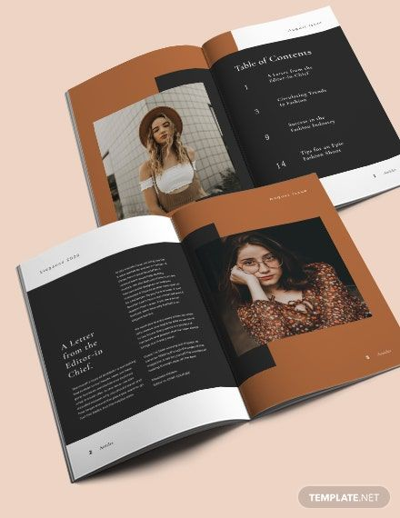
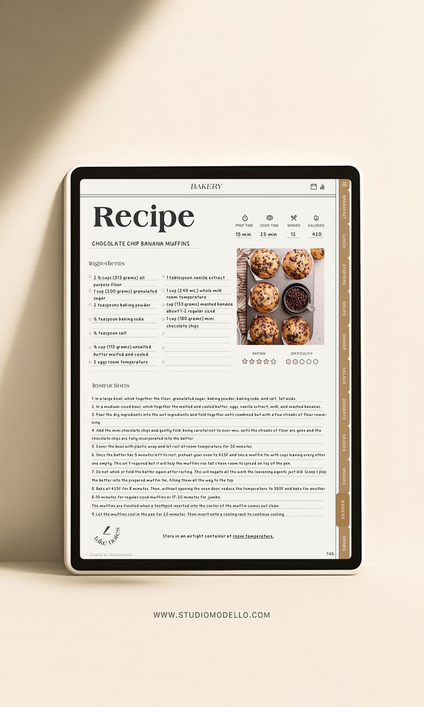

Especialidades
Traducción de páginas web

Traducción editorial

Traducción literaria

Traducción turística

Conectando culturas a través de la traducción e interpretación
En TraduEssence7 nos comprometemos a conectar culturas y personas a través de servicios de traducción e interpretación precisos, claros y confiables. Nuestro propósito es facilitar la comunicación en diferentes contextos, desde lo académico hasta lo profesional, asegurando que cada mensaje conserve su esencia original. Trabajamos con responsabilidad, calidad y cercanía, para que cada cliente encuentre en nosotros un aliado en sus procesos de comunicación multilingüe. Nos aseguramos de que nuestras traducciones te ayuden a alcanzar clientes potenciales en Perú; así mismo, a través de nuestros servicios obtendrás documentos de calidad.
En TraduEssence7 buscamos, a largo plazo, volvernos la empresa líder en el mercado de las traducciones peruanas. Planeamos lograr este objetivo a través de: la iniciativa de tendencias, la actualización constante a nuestras herramientas de trabajo, hacia nuestro equipo y brindando a nuestros clientes una comunicación clara sobre la planificación y realización de nuestros proyectos.
Ofrecemos traducciones precisas y naturales al español.
Reliable translations into English, adapted to your needs.
Serviços especializados em traduções para o português.
Traductions fidèles à l’original pour vos projets en français.
En TraduEssence7 nos diferenciamos por ofrecer traducciones de calidad, fieles al mensaje original y adaptadas al contexto de cada cliente. Garantizamos entregas puntuales, al respetar siempre los plazos acordados. Así, resaltamos nuestro compromiso para brindar un servicio confiable y cer